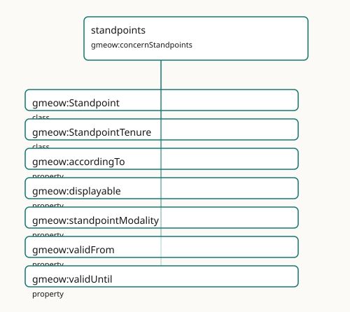

standpoints
Perspective-indexed claims without primary, preferred, or winner slots.

Participating Slices
- names - GMEOW Names Module
- standpoint - GMEOW
StandpointModule - temporal - GMEOW Temporal — intervals, instants, temporal frames, time-scoped relations
Terms
| Term | Category | Definition |
|---|---|---|
gmeow:Standpoint |
class | A named perspective / frame within which claims are held true — a state's official position, a community's usage, an editorial or historiographic point of view. Minted only when th |
gmeow:StandpointTenure |
class | The reified, time-scoped fact that a standpoint held a particular position over an interval — recognition granted in 2008 and withdrawn in 2030 is an opened-then-closed tenure, nev |
gmeow:accordingTo |
property | The standpoint / frame within which the annotated statement is asserted true — according to whom. DISTINCT from gmeow:wasAttributedTo (which source RECORDED the claim) and gmeow: |
gmeow:displayable |
property | Whether a name or identity facet may be shown in interfaces and reports. The ONLY display control in the model — across naming (gmeow:Appellation) and identity (gmeow:IdentityFacet |
gmeow:standpointModality |
property | The belief value a standpoint assigns the annotated proposition — how the standpoint holds it, not merely that it holds it. This single axis is at least as expressive as BOTH t |
gmeow:validFrom |
property | The instant from which the annotated statement is asserted to hold. |
gmeow:validUntil |
property | The instant until which the annotated statement is asserted to hold. |